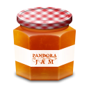

PandoraJam
I've recently upgraded my laptop. Now I have two CPU cores so I can now listen to music streaming from sites like Last.fm or Pandora while working in Netbeans (on my previous laptop, Netbeans with its continuous compilation, syntax checking and color highlighting would make any flash music player skip and stutter horribly). Over the last week, I've spent a lot of time listening to and enjoying Pandora - lots of good new music, with only a few songs that I had to skip. However, when I play music from Pandora, I miss having this music scrobbled by last.fm - so last.fm doesn't know what I've been listening to this week, and my last.fm recommendations will ultimately suffer. I'd like to be able to scrobble all my music - even music I listen to from Pandora. There are a few Pandora helpers that will scrobble your Pandora listening - one of the first is Pandora.fm
My
favorite is PandoraJam. PandoraJam is a Pandora client. It has
lots of interesting features. First - it is a standalone app - so when
you accidentally close your browser (or when the browser crashes), the
music doesn't stop. It wll scrobble your music to last.fm.
It eliminates the Pandora ads - and allows you to toss your Pandora
tracks into iTunes for later listening. Here's the feature list
from the PandoraJam page:
- Stream music wirelessly to a sound system (requires Airport Express)
- Record music for iPod or iPhone playback
- Apple Remote support
- Tag recordings with album artwork
- Submit songs to Last.fm (known as Audioscrobbling)
- Native, Cocoa application.
- Growl notifications
- Keyboard shortcuts
- Instant Messaging status updates (Adium, iChat, Skype)